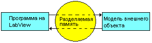
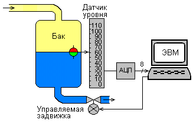
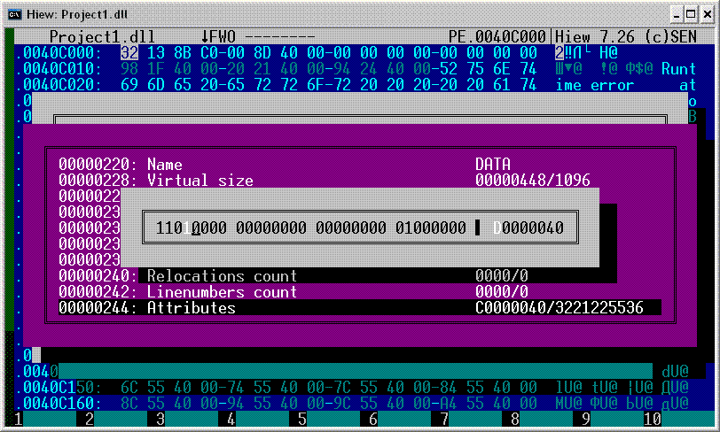
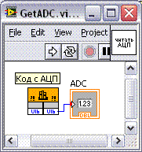
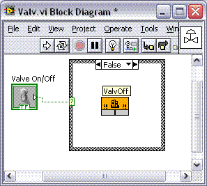
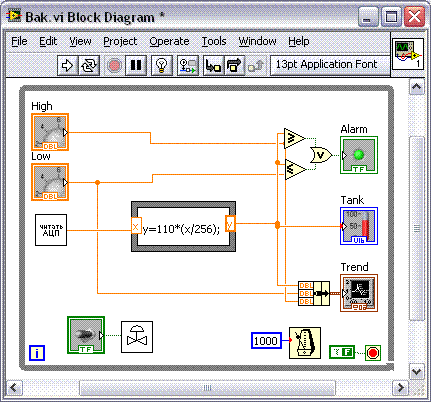
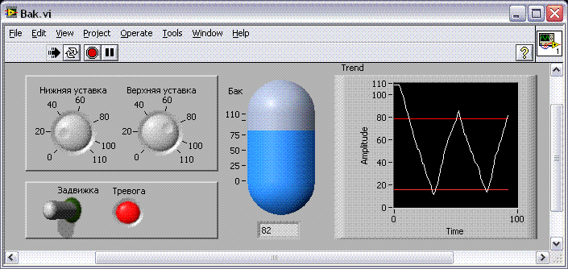

Взаимодействие LabView с программными моделями объектов внешнего мира
|
Введение
В этой статье мне хотелось бы напомнить об одном очень простом, но эффективном
трюке, который позволяет отлаживать LabView-программы, взаимодействующие в реальном
времени со внешними объектами. Если самого объекта нет (например, предполагается
"домашняя" отладка), то его роль вполне может сыграть автономная программа, написанная на
любом языке программирования. (Примечание. Если вам кажется, что проще всего модель
сделать тоже на LabView и оформить как часть отлаживаемой программы, то вы ошибаетесь.
Сложная модель и громоздкая система связей могут похоронить под собой отлаживаемую
программу).
Сам я пользуюсь этим трюком давным-давно, но не встречал, чтобы он упоминался кем-
нибудь в Интернете. Вероятно, "непрограммисты" не подозревают о существовании подобного
трюка, а "труЪ кодерам" сочинять программы на LabView западло. :) Как бы то ни было, речь
пойдет вот о чем (см. рис. 1).

1. Постановка задачи
Написание программной модели внешнего объекта проиллюстрируем на примере
емкости, заполняемой и опустошаемой через трубы (см. рис. 2). Пропускная способность
выходной трубы - константа W куб/c, на трубе стоит регулируемая задвижка. Удельная скорость
подачи жидкости через первую трубу - случайная величина, распределенная равномерно на
интервале 0..W куб/c. Емкость цилиндрическая диаметром R см и высотой H см.

К емкости прикреплен поплавковый датчик уровня, выход которого преобразуется 8-
битовым АЦП. Необходимо при помощи LabView-программы следить за объемом жидкости и
поддерживать его в интервале от Vmin до Vmax куб.
2. Физическая модель
Сначала составим физическую модель происходящего в баке:
- W1:=Random[0..W] - сколько жидкости втекает;
- Если задвижка открыта, то W2:=W, иначе W2:=0 - сколько жидкости вытекает;
- DV := W1-W2 - изменение объема жидкости в баке за единицу времени;
- V := V + DV - новое значение объема;
- L := V/ пR2 - новое значение уровня жидкости;
- X := (L/H)*255 - код на выходе АЦП;
- T := T + DT - приращение времени.
Теперь нужно, чтобы:
- LabView-программа могла получать изменяющиеся значения переменной X;
- Программа-модель могла получать от LabView-программы признак состояния
задвижки - открыта она или закрыта.
3.Организация разделяемой памяти
Для обмена данными между моделирующей и управляющей программами удобней
всего использовать "разделяемую" (т.е. общую) память. В Windows она организовывается при
помощи специальным образом скомпилированной и скомпонованной DLL, которая загружается
в разные адресные пространства (в нашем случае это LabView и программная модель объекта),
и ее переменные равно доступны для всех процессов этих адресных пространств. Рассмотрим,
как изготовить такую DLL. (Подробней про изготовление "обычных" DLL и про подключение их к
LabView модно прочитать здесь).
3.1. Компиляторы Borland C/C++ и Borland C/C++ Builder
Исходный текст для библиотеки будет выглядеть следующим образом. Обратите
внимание на два важных обстоятельства: 1) прагмы описания сегмента должны появиться в
тексте до включения файла windows.h; 2) разделяемые переменные обязательно должны быть
проинициализированы какими-нибудь значениями. Итак, файл sharedll.cpp:
#pragma option -zRSHARESEG // Имя сегмента
#pragma option -zTSHARECLS // Класс сегмента
__int8 Valve = 1; // Задвижка
__int16 ADC = 0; // Код АЦП
#include <windows.h>
#pragma argsused
// Функции для доступа к переменным извне
void _export _stdcall SetADC(WORD x) { // Изменить код на АЦП
ADC = x;
}
void _export __stdcall GetADC(WORD *x) { // Прочитать код с АЦП
*x = ADC;
}
void _export __stdcall ValvOn() { // Открыть задвижку
Valve = 1;
}
void _export __stdcall ValvOff() { // Закрыть задвижку
Valve = 0;
}
BYTE _export __stdcall GetValv() { // Узнать состояние задвижки
return Valve;
}
Не забудем включить в проект файл sharedll.def, в котором описываются правила замены
сгенерированных компилятором странных имена типа "@SetADC$qqsus" на "нормальные"
имена типа "SetADC". (Подробней про "манглинг" имен см. здесь).
SEGMENTS
SHARESEG CLASS "SHARECLS" SHARED
EXPORTS
SetADC=@SetADC$qqsus
GetADC=@GetADC$qqspus
ValvOn=@ValvOn$qqsv
ValvOff=@ValvOff$qqsv
GetValv=@GetValv$qqsv
После построения проекта получается файл sharedll.dll, содержащий две "общие" переменные
ADC и Valve и экспортирующий набор функций для доступа к ним извне.
3.2. Компиляторы MS Visual C/C++ и Visual Studio C/C++
Исходный текст для библиотеки будет выглядеть следующим образом. Обратите
внимание на два важных обстоятельства: 1) прагмы описания сегмента должны появиться в
тексте до включения файла windows.h; 2) разделяемые переменные обязательно должны быть
проинициализированы какими-нибудь значениями. Итак, файл sharedll.cpp:
#include <windows.h>
#include "stdafx.h"
#define EXPORT extern "C" __declspec (dllexport)
#pragma data_seg("SHARESEG")
extern BYTE Valve=1; // Задвижка
extern WORD ADC=0; // Код АЦП
#pragma data_seg()
EXPORT void CALLBACK _stdcall SetADC(WORD x) { // Изменить код на АЦП
ADC = x;
}
EXPORT void CALLBACK __stdcall GetADC(WORD *x) { // Прочитать код с АЦП
*x = ADC;
}
EXPORT void CALLBACK __stdcall ValvOn() { // Открыть задвижку
Valve = 1;
}
EXPORT void CALLBACK __stdcall ValvOff() { // Закрыть задвижку
Valve = 0;
}
EXPORT BYTE CALLBACK __stdcall GetValv() { // Узнать состояние задвижки
return Valve;
}
Не забудем включить в проект файл sharedll.def, в котором описываются правила замены
сгенерированных компилятором странных имена типа "GetADC@4" на "нормальные" имена
типа "GetADC". (Подробней про "манглинг" имен см. здесь).
EXPORTS
SetADC @1
GetADC @2
ValvOn @3
ValvOff @4
GetValv @5
После построения проекта получается файл sharedll.dll, содержащий две "общие переменные"
ADC и Valve и экспортирующий набор функций для доступа к ним извне.
3.3. Иные способы создания разделяемой памяти
К сожалению, описанный выше метод разделения памяти, использующий специально
оформленные DLL, возможен только для некоторых компиляторов/компоновщиков с языков
С/C++. При помощи Borland Delphi или MS Visual Basic тоже можно изготавливать DLL (см. здесь),
но они не будут содержать "разделяемых" переменных.
В качестве альтернативы можно использовать универсальный способ, пригодный для любых
языков программирования (за исключением, естественно, ориентированных на виртуальные
машины, например, Java) . Он основан на отображении файлов на память при помощи API-
функции CreateFileMapping(), которой в качестве первого аргумента передается не хэндл какого-
нибудь реально существующего файла, а 0xFFFFFFFF. В этом случае файл все равно будет создан,
но не на диске, а в памяти. Если два приложения откроют файл с одним и тем же именем, они
смогут обмениваться данным через него. Но такой подход кажется неудобным в нашем случае,
так как одно из наших приложений - программа на LabView. (Я пробовал, все работает, но
действительно не очень удобно ).
Так же стоит упомянуть "хакерский" метод. При помощи программы HIEW можно попробовать
изменить флаги свойств секции данных для DLL, не имевшей разделяемой памяти, с 0хС0000040
на 0xD0000040. На свой страх и риск.

4. Программная модель объекта
В п. 2 была описана физическая модель работы емкости. Она может быть оформлена на любом
языке программирования примерно вот таким образом. (Примечание. Константы -
геометрические параметры бака, пропускные способности труб и т.п. подобраны из
соображений более или менее "красивой картинки" ).
Вот вариант на Си (компилятор Borland C/C++ 5.5):
#include <windows.h>
#include <stdio.h>
typedef void (WINAPI* SETADC_TYPE)(WORD);
typedef void (WINAPI* GETADC_TYPE)(WORD *);
typedef void (WINAPI* VALVON_TYPE)();
typedef void (WINAPI* VALVOFF_TYPE)();
typedef BYTE (WINAPI* GETVALV_TYPE)();
main() {
// Блокирование запуска 2-ой копии программы
HANDLE m = CreateMutex( NULL, TRUE, "SHAREDLL_MUTEX" );
if (GetLastError()==ERROR_ALREADY_EXISTS) exit(0);
// Загрузка DLL и получение адресов функций
HANDLE h = LoadLibrary("sharedll.dll"); if (!h) exit(0);
SETADC_TYPE SetADC = (SETADC_TYPE) GetProcAddress ( h, "SetADC" );
GETADC_TYPE GetADC = (GETADC_TYPE) GetProcAddress ( h, "GetADC" );
VALVON_TYPE ValvOn = (VALVON_TYPE) GetProcAddress ( h, "ValvOn" );
VALVOFF_TYPE ValvOff = (VALVOFF_TYPE) GetProcAddress ( h, "ValvOff" );
GETVALV_TYPE GetValv = (GETVALV_TYPE) GetProcAddress ( h, "GetValv" );
// Константы моделирования
int V=0; // Текущий объем жидкости в баке
int T=0; // Текущее время
int R=30; // Радиус бака
int H=110; // Высота бака
int Vmax = (int)( (double)(R*R) * 3.1415926 )*H; // Объем бака
int W=5000; // Пропускная способность труб
int W1, W2; // Объемы впуска и слива в ед. времени
int L=0; // Текущий уровень жидкости в баке
WORD X, Y; // Код АЦП
int DV; // Изменение объема
ValvOff(); // Первоначально слив закрыт
// Бесконечный цикл моделирования работы емкости
while (1) {
W1 = random(W); // Сколько втекает
if (GetValv()) W2=W; else W2=0; // Сколько вытекает
DV = W1-W2; // Изменение объема
V = V + DV; // Новый объем
if (V>Vmax) V=Vmax; if (V<0) V=0; // Коррекция объема
L = (int)((double)V/((double)(R*R)*3.1415926)); // Новый уровень
X = (WORD)(((double)L/(double)H)*256.0); // Код АЦП
SetADC(X);
T = T+1;
Sleep(500);
#define DBG
#ifdef DBG
GetADC(&Y);
printf("\nW1=%6d W2=%6d DV=%6d V=%6d L=%3d X=%3d Valv=%1d Y=%3d",
W1, W2, DV, V, L, X, GetValv(), Y);
#endif
}
}
Программа оформлена в виде простого консольного приложения. Она загружает DLL
динамически, ищет в ней нужные функции, определяет их адреса и в дальнейшем обращается к
ним. С другой стороны, к этим же функциям этой же DLL будет обращаться LabView-программа.
В качестве минимального сервиса в программе предусмотрена блокировка повторного запуска.
У программы довольно много направлений совершенствования. Например, я предпочитаю
делать такие программы в виде оконного приложения (т.е. с точкой входа WinMain(), а не main()
), но окно не открывать, а сразу сворачивать его в трей (туда, где живут "часики"). Так же, для моделирования
"быстрых" объектов может потребоваться пересчитывать время не 2 раза в секунду, а, например, 100 раз, указав
Sleep(10). (Примечание. Для "быстрых" объектов придется пожертвовать выводом на экран, т.к. printf() просто
не сможет так быстро рисовать буковки и циферки).
5. Управляющая программа
Итак, модель емкости разработана и запущена - она незаметно висит в памяти и в режиме
реального времени видоизменяет параметры процесса втекания и вытекания жидкости. Теперь
разработаем LabView-приложение, которое будет мониторить этот процесс, управлять им и т.п.
Собственно говоря, ради этого приложения вся каша и заваривалась. Ведь можно обойтись без
демонтажа реального бака, стоящего на производстве или в лаборатории, без перевозки его
домой и без установки на кухне или в ванной - его роль будет исполнять написанная нами ранее
моделирующая программка. А LabView-программу можно сочинять, отлаживать и вылизывать
автономно.
Вот пример простейшего приложения, отображающего уровни жидкости и управляющего
задвижкой "вручную". Техника подключения к DLL описана здесь.
Это чтение 8-битового кода с АЦП.

Это управление задвижкой.

Это блок-схема управления системой.

Ну а это передняя панель.

Можете теперь дома усовершенствовать это приложение - например, добавить автоматическое открытие-закрытие
задвижки, включить в обратную связь ПИД-регулятор и т.п. А потом принести готовый результат на работу.
Общее примечание. Порой, это трюк годится не только для простеньких студенческих лабораторок, но
и при отладке довольно сложных систем. Сигналы, идущие с датчиков, при этом не моделируются, а сначала
записываются на реальном объекте, а в процессе моделирования считываются из файла.
(с) Constantin E. Climentieff aka DrMad,
mailto: drmad@dr.com * http://drmad.chat.ru
|